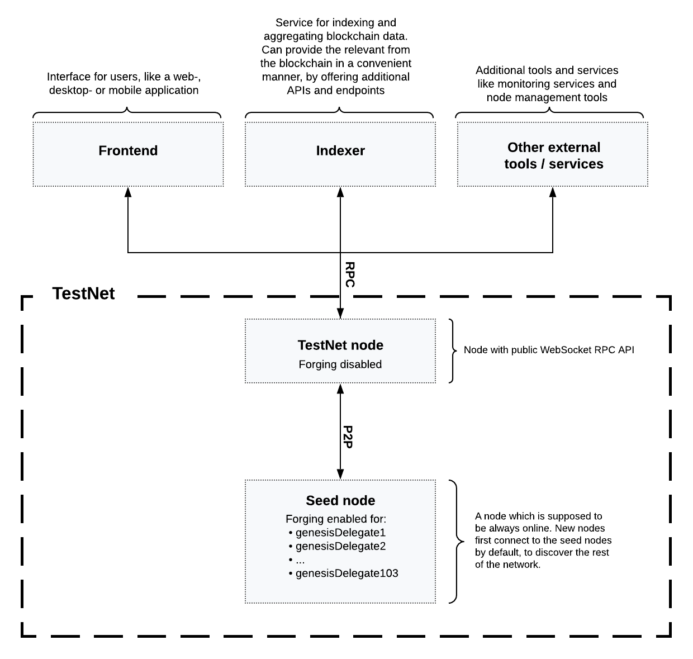

Launching a blockchain application
1. Introduction
How to turn your local 1-node Devnet into an actual blockchain network.
This guide describes how to release a blockchain application to the public, and how to establish a network of nodes and validators that are maintaining and securing the blockchain application in a decentralized manner.
2. Initial state: Devnet
The Devnet is used as the default network to connect to during the development of a blockchain application. Starting the node after Bootstrapping the blockchain application will always connect to a local Devnet.
During development, it is both necessary and convenient to have a rather centralized network with only one node connected.
Once the development has reached a certain maturity, it will be necessary to add more nodes to the network, and hence offer other potential users the opportunity to join the newly created blockchain network.
This is how the setup looks during development:

3. Prepare the Testnet
To turn the Devnet into a public Testnet, the following steps should be considered:
-
Create a new unique genesis block for the Testnet.
-
Create new genesis delegates & keep their credentials private and secure.
-
-
-
Update community identifier here.
-
. ├── bin/ ├── config/ │ └── default/ │ ├── config.json │ └── genesis_block.json ├── package-lock.json ├── package.json ├── src/ │ ├── app/ │ │ ├── app.ts │ │ ├── index.ts │ │ ├── modules/ │ │ ├── modules.ts │ │ ├── plugins/ │ │ └── plugins.ts │ └── commands/ └── test/
3.1. Create a new genesis block
The genesis block for the Testnet is created by using the genesis-block:create command of the application CLI.
The new genesis block shall have the following properties:
-
23 genesis delegate accounts (default: 103).
-
5 genesis accounts (default: 10).
-
2000 tokens are distributed initially to each genesis account (default: 1000).
| The above variables for the genesis block can be adjusted as desired. If no flags are set, the default values will be used. |
| In case a custom value is used for the number of validators, don’t forget to update the genesis configuration accordingly. |
To create the custom genesis block, set the following flags:
./bin/run genesis-block:create --validators 23 --accounts 5 --token-distribution 200000000000For more information about generating a genesis block, check out the guide Generating a genesis block.
Replace the old genesis block under config/default with the new one.
|
The following files should be kept private and not shared with the public:
|
3.2. Update the configuration file
The following config options are most interesting to update:
-
label: Defines the process name and folder within the root path. -
version: Version of the application. -
networkVersion: Defines a P2P network version. -
genesisConfig.bftThreshold: Defines a threshold for pre-vote and pre-commit of delegates. -
genesisConfig.communityIdentifier: Defines a community identifier used to create the network identifier. -
genesisConfig.blockTime: Defines the frequency of blocks to be created in seconds. -
genesisConfig.rewards: Defines a block reward schedule. -
genesisConfig.baseFees: Defines an additional base fee to be included in the calculation of the minimum fee for a transaction. -
genesisConfig.activeDelegates: Number of actively forging delegates. -
genesisConfig.standbyDelegates: Number of random standby delegates that are allowed to forge each round. -
forging.force: Force enabling forging by using the default password. Should be alwaysfalsein the default config. -
forging.defaultPassword: Password to automatically decrypt the encrypted passphrase of one or multiple delegates specified inforging.delegates. This is only used for enabling forging for genesis delegates. Should be removed in the default config. -
forging.delegates: Contains the delegate information for forging. Should be empty in the default config. -
network.seedPeers: Defines one or multiple entry node(s) to the network.
|
The sum of The |
{
"label": "my-app",
"version": "0.1.0",
"networkVersion": "1.0",
"genesisConfig": {
"bftThreshold": 16,
"communityIdentifier": "hello",
"blockTime": 6,
"maxPayloadLength": 19000,
"rewards":{
"milestones": [
"1000000000",
"700000000",
"500000000",
"200000000",
"100000000"
],
"offset": 100,
"distance": 100000
},
"minFeePerByte": 500,
"baseFees": [
{
"moduleID": 2,
"assetID": 0,
"baseFee": 1000000
}
],
"activeDelegates": 19,
"standbyDelegates": 4
},
"forging": {
"force": false,
"waitThreshold": 2,
"delegates": [],
},
"network": {
"seedPeers": [
{
"ip": "1.2.3.4",
"port": 5000
}
],
"port": 5000
},
// ...
}3.3. Define seed nodes
Each node that is connecting to the network for the first time, will initially connect to the seed nodes. Starting from a seed node, the new node will discover the rest of the network by requesting their peer list. This is then followed by the peer lists of the newly discovered peers and so on.
To define a node as a seed node, simply add the IP and port of the seed node to the config as described in section create a configuration object.
3.3.1. Seed node config
It is convenient to have the genesis delegates actively forging on the seed node, in case the network does not yet have enough real delegates who can take the forging spots.
It is very important to not share the config of the seed nodes with the public, especially if it contains the defaultPassword to decrypt the passphrases of the genesis delegates.
|
Include the data of the new genesis delegates in the config (see Enabling forging for the new genesis delegates).
Besides this, seed nodes require no further special config options. It is highly recommended to leave the public API disabled on a seed node.
3.4. Releasing the Testnet to the public
Add the code for the customized node application (including the custom transactions), to a public code repository.
For example, on Github or Gitlab.
This provides all users with the opportunity to download the application, and deploy it on a server in order to connect with the network.
The code of the blockchain application can be released as is to enable external users to spin up their own node.
. ├── bin/ ├── config/ │ └── default/ │ ├── config.json │ └── genesis_block.json ├── package-lock.json ├── package.json ├── src/ │ ├── app/ │ │ ├── app.ts │ │ ├── index.ts │ │ ├── modules/ │ │ ├── modules.ts │ │ ├── plugins/ │ │ └── plugins.ts │ └── commands/ ├── test/ └── README.md
It is recommended to provide additional application specific documentation for users, for example by updating the README.md with all the important steps required to spin up a node.

3.5. Add a node with enabled API
As the seed node should have the RPC API disabled, add a new node to the network with the API enabled. The main function of this node is to provide blockchain data to external tools and services via the API. Forging should be disabled on this node.
{
// ...
"rpc": {
"enable": true,
"mode": "ws",
"port": 8080
},
// ...
}To restrict the node API to specific IPs, see the guide [guides/node-management/non-forging-node-protection.html]
3.6. Enable the Faucet plugin
{
// ...
"plugins": {
"faucet": {
"encryptedPassphrase": "iterations=1000000&cipherText=643bfbf1b6f1dc0ce740dd9fc9f27a682e476dc5de4e6c023deded4d3efe2822346226541106b42638db5ba46e0ae0a338cb78fb40bce67fdec7abbca68e20624fa6b0d7&iv=8a9c461744b9e70a8ba65edd&salt=3fe00b03d10b7002841857c1f028196e&tag=c57a798ef65f5a7be617d8737828fd58&version=1",
"captchaSecretkey": "6LeIxAcTAAAAAGG-vFI1TnRWxMZNFuojJ4WifJWe",
"captchaSitekey": "6LeIxAcTAAAAAJcZVRqyHh71UMIEGNQ_MXjiZKhI"
}
}
}4. Become a validator for the Testnet
After the Testnet-release of the blockchain application, it is necessary that real, independent delegate accounts take the forging slots of the genesis delegates.
| The network will become decentralized for the first time when at least 51% of the delegates that are actively forging in the network, are independent delegates. |

To join the network as a new delegate, follow the steps listed below:
-
Create your own, private account on the network.
-
Use the Testnet Faucet to receive some initial tokens.
-
Set up a node: Follow the steps in the
READMEfile or the documentation of the blockchain application. Normally it involves downloading the application code from a public source, configuring it (via config or flags on startup), and starting the application. -
Enable forging for the newly registered delegate.
-
Perform a self-vote.
-
Optional: Convince other accounts to vote for your delegate, in order to increase the delegate vote weight if necessary.